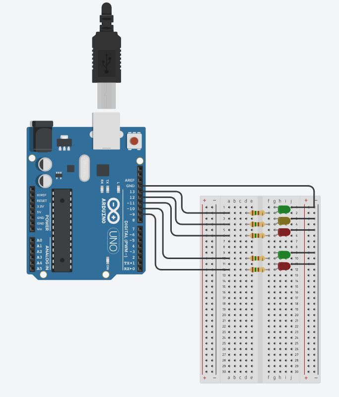
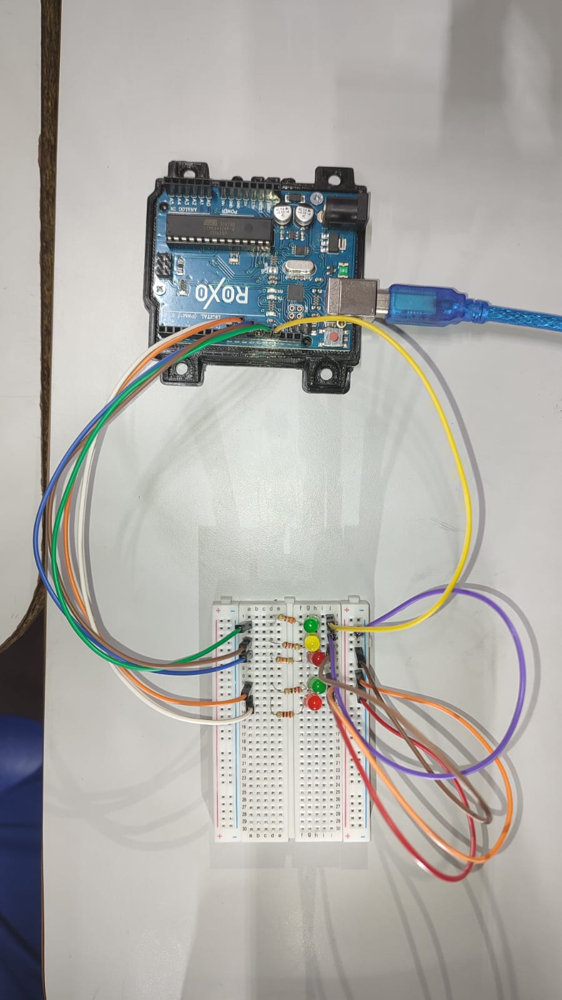
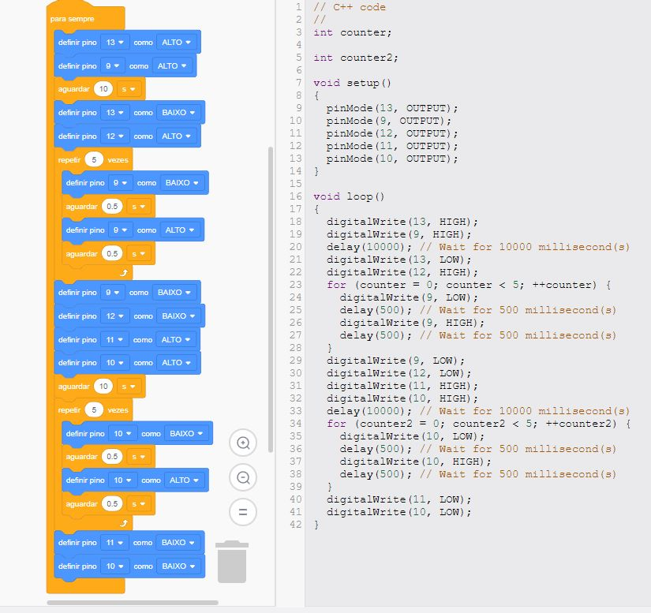

Introdução
Nossa prática realizada no dia 14/04/2023, foi uma montagem de dois semáforos, pedestre e carro, onde utilizamos os seguintes componentes:
- arduino;
- protoboard;
- resistores;
- LEDs (2 verdes, 2 vermelhos, 1 amarelo);
- jumpers;
- bateria (laptop).
A Montagem


Logo abaixo segue os principais passos a serem tomados para se montar esse circuito:
- 0. Unir materiais: arduino, protoboard, resistores, LEDs (2 verdes, 2 vermelhos, 1 amarelo), jumpers e uma bateria de laptop.
- 1. Conecte o Arduino à protoboard.
- 2. Colocar os resistores na protoboard.
- 3. Conecte os LEDs à protoboard, utilizando um resistor em série com cada LED.
- 4. Conecte os jumpers para fazer as conexões necessárias.
- 5. Conecte a bateria de laptop ao Arduino para fornecer energia.
- 6. Carregar o código no Arduino usando o Arduino Create for Education.
- 7. Testar o semáforo para verificar se os LEDs acendem e apagam corretamente.
Agora segue a foto do código (uma parte é em blocos, a outra em linguagem C++) que faz esse trem funcionar:
